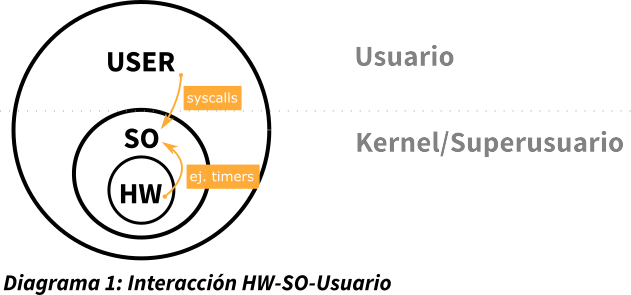
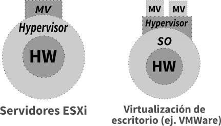
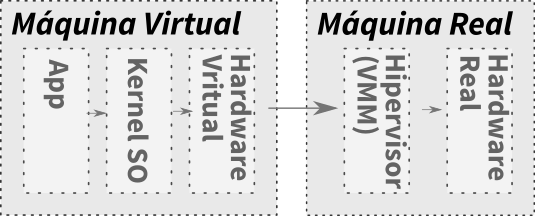

Introducción a la virtualización
Disclaimer
Estos apuntes fueron creados con el fin de estudio propio, sin embargo, para ayudar a los compañeros y futuros internautas se encuentran aquí.
En diversos puntos de las notas se encuentran varias figuras, las cuales han sido recreadas de notas de la pizarra, de libros o de diapositivas dadas por el profesor.
Espero que te sirva de apoyo para el estudio y motivación para esta asignatura que he encontrado muy interesante.
Introducción
Comúnmente se conoce como virtualización a la emulación de sistemas operativos con programas como VMWare o Virtualbox. Sin embargo, la virtualización se encuentra mucho más presente, pues los procesos y threads son también ejemplos de virtualización de la CPU. De hecho, incluso los entornos de ventanas también se pueden considerar virtualización. A partir de ahora, solo se hablará de "virtualización de máquina".
¿Qué es una máquina?
Consideramos una máquina a un Autómata con estados, que pasa de un estado a otro según una circustancia dada. Un computador no es más que una máquina de estados.
Un diagrama de estados con conjuntos de [0, 1] nos permitiría englobar todos los estados del ordenador.
¿Qué es la virtualización?
Nos permite ofrecer recursos hardware ficticios usando software/hardware. En su diagrama de estados de una máquina virtual, es posible que encontremos estados no existentes en la máquina real.
Principio de equivalencia
El software debe de ejecutarse del mismo modo en la máquina virtual que en el hardware real, el usuario de la máquina virtual no debería de notar la diferencia con un hardware real. A pesar de que su comportamiento debe ser el mismo, se permite que el tiempo de ejecución pueda no ser el mismo (en general suele ser más lento).
El caso idílico de diagrama de estados debe de ser 1:1, pero en lo práctico esto no se cumple. Esto se debe en parte a que la máquina real puede ejecutar más cosas en paralelo (como varias máquinas virtuales).
Motivaciones
Emulaciónde máquinas/sistemas operativos: la máquina puede no existir o podemos no tener acceso a ellas.- Ejecución de
legacy code: por problemas de compatibilidad. - Experimentación (
sandboxes, what-if?, etc.): por ejemplo para reversing de malware, o el propio chroot se puede considerar sandboxing. Isolationentre los guests (separación de servicios en diferentes servidores virtuales)Consolidación: ejecutar varias máquinas físicas, clonación de máquinas virtuales, facilita el balanceo de carga, infraestructuras a prueba de fallos (failover)...
¿CPU con esquema USER-SO-HW?
En un CPU es necesario que existan dos modos para poder tener el esquema USER-SO-HW. Estos dos modos son usuario y kernel/superusuario. Esto puede conseguirse facilmente en hardware con un solo bit (0 - usuario, 1- kernel).
Para el cambio entre estos modos se realiza mediante el uso de Interrupciones. En teoría un SO no debería de ejecutarse si no se ejecuta una interrupción. Un SO que se ejecuta en todo momento no es un SO bueno, pues resta tiempo de ejecución al programa principal.
Del usuario al SO se utilizan las system calls, del hardware pueden ser ejemplos el timer o la planificación de los procesos.

Terminología
Hipervisor (o VMM = Virtual Machine Monitor)
Es el propio software de virtualización en sí (a veces denominado emulador). Es el encargado de proporcionar la abstracción de una máquina.
Son muy parecidos a los sistemas operativos. Permite la compartición de CPU, de memoria entre máquinas, posee control de permisos y arbitraje al acceso de periféricos, red, etc.
A pesar de que sea una capa de software, puede estar asistida por el hardware. Este posee un control completo de los recursos del sistema físico.

Funciones
-
Dispatcher: Se encarga de decidir que hacer tras una trap/interrupción.
-
Allocator: Asigna los recursos físicos (reales) a la máquina virtual.
-
Intérprete: Simula las instrucciones que intercepta.
Máquina Virtual (VM)
Sigue modelo de Neumman, con recursos virtualizados: CPU, RAM, almacenamiento...
Guest
Es el sistema operativo instalado en la máquina virtual
Host
Instalado sobre hardware físico. En un modelo de servidor ESXi no existe un Host.

Historia
1974 - Artículo de Popek y Goldberg
Ya se introducen varios conceptos de máquinas virtuales (VM) e hipervisores (VMM).
- Equivalencia: comportamiento idéntico entre máquinas (de nuevo, a excepción de los temporizadores).
- Control de recursos: El hipervisor posee todo el control de los recursos virtualizados.
- Eficiencia: La mayoría de las instrucciones deben de ejecutarse sin intervención del hipervisor.
Además, se habla de varios tipos de funcionamiento (que ya existían CPU desde los 60 que lo conseguían).
- Privilegiadas: generaban un trap en usuario y se ejecutaban en privilegiado.
- Sensitive instructions
- Control-sensitive: cambian la configuración de recursos del sistema. Por ejemplo I/O o cambiar la tabla de vectores.
- Behaviour-sensitive: su comportamiento depende de la configuración de recursos (modo supervisor/usuario).
- Inocuas: ej. suma
Teorema 1: virtualización (estricta)
Todas las instrucciones críticas deben de ser cedidas al hipervisor mediante el uso de traps.
Un ejemplo de instrucción crítica que debe de ser ejecutada en forma privilegiada es HALT. Esta para la ejecución del procesador hasta que sea despertada por una interrupción.
Esta característica debe de ser proporcionada por la CPU. Si no cumple esta característica no son estríctamente virtualizables, sin embargo, mediante el uso de "trucos" se puede llegar a conseguir.
Teorema 2: virtualización recursiva
Una máquina es virtualizable si cumple el teorema 1 y posee suficientes recursos.
La virtualización recursiva no es siempre posible (virtualizar dentro de la máquina virtualizada).
Tipos de maquinas virtuales (Técnicas de Virtualización)
Tipo 1: Full Machine Virtualization
El SO esta en una capa de abstracción independiente (totalmente desacoplado del HW) gracias al hipervisor.
El SO no es consciente de que esta siendo virtualizado y no requiere de modificaciones.
Hipervisores tipo 1 (Native/Bare Metal)
El VMM se ejecuta sobre la propia máquina física. Los SO estan bajo el control de VMM. Simula las operaciones de E/S directamente sobre sus propios drivers que controlan el hardware. Los threads que existen en las máquinas virtuales son invisibles para el hipervisor. El hipervisor solo se encarga de servir estas llamadas sin saber que ocurre.
Hipervisores tipo 2 (Hosted)
El VMM es una aplicación de un SO host, pero emula una máquina virtual sobre el que se puede ejecutar un SO invitado. Esto se ejecuta en un proceso normal de un SO en modo usuario. Por tanto, es necesario que las instrucciones privilegiadas sean interceptadas por un módulo del núcleo del SO. Simula las operaciones de E/S con servicios del SO real (por ejemplo ficheros). Algunos ejemplos podrían ser VMWare Workstation o VirtualBox.
Tipo 2: Paravirtualización
El VMM se ejecuta sobre el hardware (sin emular), como un SO, y ofrece interfaz con la máquina real donde el SO invitado debe ser adaptado a dicho interfaz.
Existe comunicación explícita entre el SO guest y el hipervisor, con el objetivo de ser más eficaz. Esta rapidez en parte se debe a eliminar las traps necesarias con las instrucciones críticas.
Se debe de modificar el kernel del SO guest, reemplazando las instrucciones no-virtualizables por hipercalls que comunican directamente con el hipervisor.
El hipervisor también proporciona hipercalls para otras operaciones críticas del kernel (tales como manejo de memoria, manejo de las interrupciones, información de reloj, etc.).
Ejemplo de paravirtualización en la realidad: Proyecto Xen
Tipo 3:
Language Runtimes (como la máquina virtual de Java) o los contenedores son ejemplos de esta categoría.